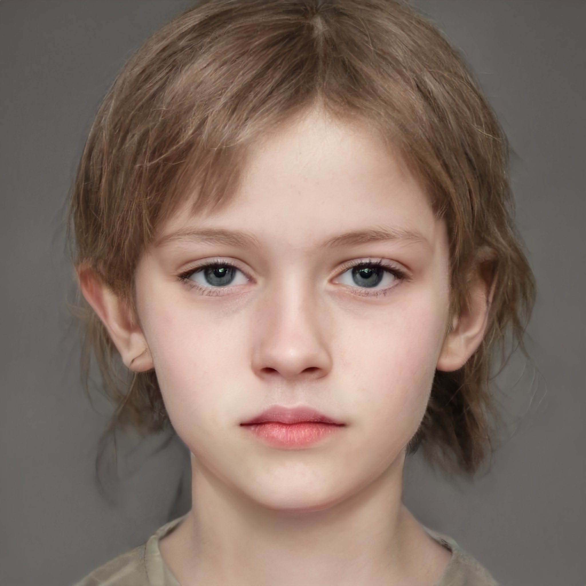
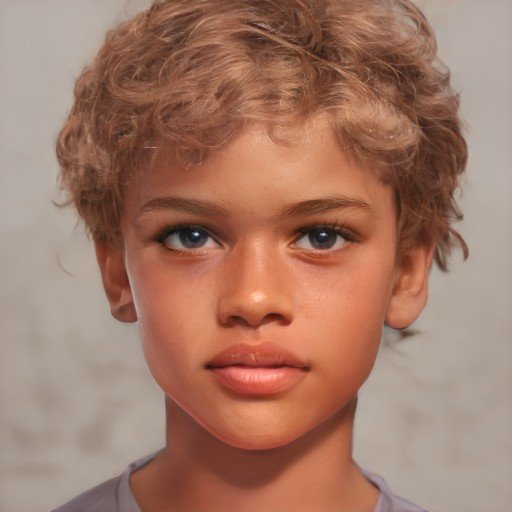

Known Aliases: Evie, The Narrator Age: 15 Family: Feminist scholar mother, sculptor father, nine-year-old brother (Jack redacted ) Additional Notes: Appears to hold somewhat of a position of leadership among the children. Entirely responsible for brother. Fantasizes about "disappearing." Most played songs include "Sparks" by Beach House, "Take Care" by Beach House, and "Artificial Nocturne" by Metric.

Known Aliases: None Age: 9 Family: Feminist scholar mother, sculptor father, fifteen-year-old sister (Eve redacted ) Additional Notes: Enjoys reading books such has Frog and Toad, George and Martha, and the children’s Bible. Loves penguins. The most connected to nature and the one who truly enjoys it. Seems to take on an important leadership role among the children as their spiritual guide. Most played songs include "A Horse With No Name" by America, "Crocodile Rock" by Elton John, and "Birdhouse In Your Soul" by They Might Be Giants.

Known Aliases: Shel Age: 11 Family: Sister is Jen redacted. Father struggles with rhinotillexomania. Mother currently has dental braces. Additional Notes: Constant companion to Jack. Gentle. Loves animals. Wants to be a veterinarian. Deaf and fluent in sign language.
Known Aliases: Jen Age:XX Family: Younger brother is Shel redacted. Father struggles with rhinotillexomania. Mother currently has dental braces. Additional Notes: Constant companion to Jack. Gentle. Loves animals. Wants to be a veterinarian. Deaf and fluent in sign language.
Known Aliases: Low, Banana-Breath Age:XX Family: Short adoptive father. Additional Notes: Adopted from Kazakhstan. Enjoys the culture of the 1960s and 1970s. Outdated fashion. Most played songs include "Picture Book" by The Kinks, "Good Vibrations" by The Beach Boys, and "Gimme Shelter" by The Rolling Stones.
Known Aliases: None Age:XX Family:redacted redacted redacted redacted redacted redacted redacted redacted redacted , sisters Kay and Amy (twins, conceived via IVF) Additional Notes: Very interested in computers and coding. Most played songs include "A Real Hero" by Electric Youth and College, "Harder Better Faster Stronger" by Daft Punk, and "Weapon of Choice" by Fatboy Slim.
Known Aliases: Val Age: Unknown Family: Unknown Additional Notes: Country girl. A climber. “Clicks” with Burl.
Known Aliases: Sukey Age:XX Family: Pregnant mother, newborn sister Additional Notes: Feminist, smart, blunt. Full-ride offer to Brown University. Most played songs include "Bad Guy" by Billie Eilish, "Heaven" by Beyoncé, and "Are You Satisfied" by Marina and the Diamonds.
Known Aliases: None Age:XX Family:redacted redacted, redacted, redacted redacted redacted Additional Notes: “Out and Proud.” Arsonist. Cows depress him. Most played songs include "Burning Pile" by Mother Mother, "Born This Way" by Lady Gaga, and "BOOGIE" by BROCKHAMPTON.
Known Aliases: Juicy Age: 13 Family: Film director father, redacted redacted Additional Notes: Homophobic. Spits and drools a lot. Father owns a mansion in Rye (Westchester County). Most played songs include "Money That's What I Want" by Barrett Strong, "Beamin'" by Quadeca, and "SICKO MODE" by Travis Scott.
Known Aliases: Terry, The Parent Whisperer Age:XX Family: Gynecologist mother, redacted father Additional Notes: Often the children’s delegate to the parents; speaks to them with a proper and stern tone. Considers himself to be a master of words, a wordsmith. Most played songs include "Cello Suite No. 1 in G Major: 1. Prelude" by Johann Sebastian Bach, "Sunday Bloody Sunday" by U2, and "Put Your Head On My Shoulder" by Paul Anka.
Known Aliases: Dee Age:XX Family: Architect mother Additional Notes: Passive aggressive towards the other children. Described by others as having borderline personality disorder. Known germophobe. Most played songs include "Heat Waves" by Glass Animals, "Easy On Me" by Adele, and "It'll Be Okay" by Shawn Mendes.
Known Aliases: None Age: 17 Family: Cheating father, aloof mother Additional Notes: Likes older men. Eating disorder. Already a freshman in college. Party girl. Most played songs include "Pursuit of Happiness" by Kid Cudi, "Off to the Races" Lana Del Rey, and "Alien Blues" by Vundabar.
Known Aliases: IVF Twin Age: 11 Family: Brother David, twin Amy, redacted redacted redacted Additional Notes: Brat. Weaker than Kay and scared of her. Most played songs include "Survivor" by 2WEI and Edda Hayes, "Crazy" by 2WEI and Marvin Brooks, and "Darkside" by Grandson.
Known Aliases: IVF Twin Age: 11 Family: Brother David, twin Kay, redacted redacted redacted Additional Notes: Brat. Weaker than Kay and scared of her. Most played songs include "Survivor" by 2WEI and Edda Hayes, "Crazy" by 2WEI and Marvin Brooks, and "Darkside" by Grandson.
Known Aliases: None Age: Teens Family:redacted redacted redacted redacted redacted redacted redacted redacted redacted redacted redacted redacted Additional Notes: Lavish lifestyle. Do not seem to give a care in the world about their surroundings. Some consider them to lack self-awareness. Known for showing off their high-class life. Smoke marijuana strain called The Oracle.
THE ADULTS:
Known Aliases: None Age: Middle aged Family: All the children Additional Notes: Not concerned about their children’s wellbeing and safety on this trip; more worried about the party scene that they dive head first into. Most played songs include "Beat on the Brat" by the Ramones, "Reelin' in the Years" by Steely Dan, and "Don't Bring Me Down" by Electric Light Orchestra.
Known Aliases: None Age:XX Family:redacted redacted redacted redacted redacted redacted redacted Additional Notes: Works as a groundskeeper for the Owner. Knowledgeable handyman and horticulturist. Most played songs include "Rocky Mountain High" by John Denver, "Baba O'Riley" by The Who, and "Take it Easy" by the Eagles.
Known Aliases: Trail Angel Age:XX Family: Darla, John, and Luca Additional Notes: Professional biologist. Tortured by the Governor. Joins the group of Angels on the trail during the storm for protection. Most played songs include "Folsom Prison Blues" by Johnny Cash, "Green, Green Grass of Home" by Bobby Bare, and "Homeward Bound" by Simon and Garfunkel.
Known Aliases: Trail Angel Age:XX Family: Mattie, John, and Luca Additional Notes: Falls into the category of a stereotypical hippie. Has been known to teach classes in various forms of art. Used to be a devoted Catholic. Most played songs include "Turn! Turn! Turn! (To Everything There Is a Season)" by the Byrds, "Green Tambourine" by The Lemon Pipers, and "Dedicated To The One I Love" by The Mamas and The Papas.
Known Aliases: Trail Angel Age:XX Family: Mattie, Darla, and Luca Additional Notes: Former sous chef. redacted redacted redacted redacted redacted redacted redacted redacted redacted redacted redacted redacted redacted redacted redacted redacted
Known Aliases: Trail Angel Age:XX Family: Mattie, Darla, and John Additional Notes: Trained as EMT and has vast medical knowledge. Serves as group doctor. Most played songs include "Black Dog" by Led Zeppelin, "N.I.B." by Black Sabbath, and "Don't Fear the Reaper" by Blue Öyster Cult.
Frontman: The Governor Additional Notes: Violent. Took over the farm and held children hostage. “Dealt with” by The Owner.